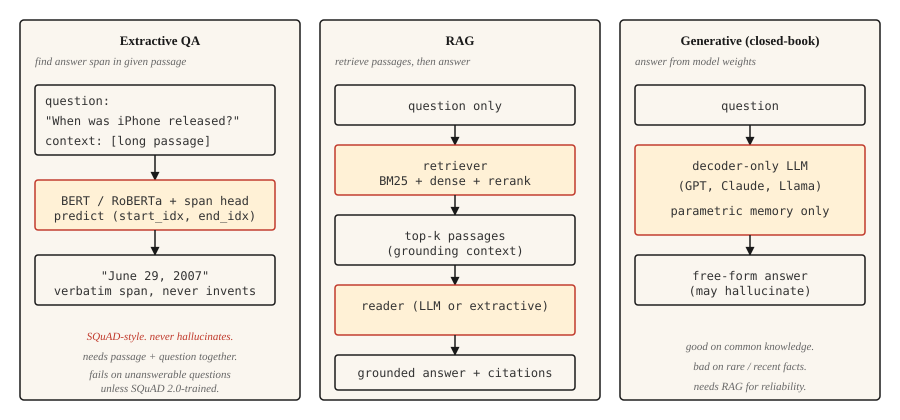

Home / NLP, Foundations to Advanced
Question Answering Systems
Three systems shaped modern QA. Extractive found spans. Retrieval-augmented grounded them in documents. Generative produced answers. Every modern AI assistant is a mix of the three.
- Type
- Build
- Languages
- Python
- Prerequisites
- Phase 5 · 11 (Machine Translation), Phase 5 · 10 (Attention Mechanism)
- Time
- ~75 minutes
#The Problem
A user types "When did the first iPhone launch?" and expects "June 29, 2007." Not "Apple's history is long and varied." Not "2007" sitting in isolation with no sentence. A direct, grounded, correct answer.
Three architectures have dominated QA over the last decade.
- Extractive QA. Given a question and a passage that is known to contain the answer, find the start and end indices of the answer span in the passage. SQuAD is the canonical benchmark.
- Open-domain QA. The passage is not given. Retrieve the relevant passage first, then extract or generate an answer. This is the bedrock of every RAG pipeline today.
- Generative / Closed-book QA. A large language model answers from its parametric memory. No retrieval. Fastest at inference, least reliable on facts.
The trend in 2026 is hybrid: retrieve the best few passages, then prompt a generative model to answer grounded in those passages. That is RAG, and lesson 14 covers the retrieval half in depth. This lesson builds the QA half.
#The Concept

Extractive. Encode question and passage together with a transformer (BERT family). Train two heads that predict start and end token indices of the answer. Loss is cross-entropy over valid positions. Output is a span from the passage. Never hallucinates (by construction), never handles questions the passage cannot answer (by construction).
Retrieval-augmented (RAG). Two stages. First, a retriever finds the top-k passages from a corpus. Second, a reader (extractive or generative) produces the answer using those passages. The retriever-reader split lets each be trained and evaluated independently. Modern RAG often adds a reranker between them.
Generative. A decoder-only LLM (GPT, Claude, Llama) answers from learned weights. No retrieval step. Excellent on common knowledge, catastrophic on rare or recent facts. The hallucination rate is inversely correlated with fact frequency in the pretraining data.
#Build It
#Step 1: extractive QA with a pretrained model
from transformers import pipeline
qa = pipeline("question-answering", model="deepset/roberta-base-squad2")
passage = (
"Apple Inc. released the first iPhone on June 29, 2007. "
"The device was announced by Steve Jobs at Macworld in January 2007."
)
question = "When was the first iPhone released?"
answer = qa(question=question, context=passage)
print(answer){'score': 0.98, 'start': 57, 'end': 70, 'answer': 'June 29, 2007'}deepset/roberta-base-squad2 is trained on SQuAD 2.0, which includes unanswerable questions. By default, the question-answering pipeline returns the highest-scoring span even when the model's null score wins — it does not automatically return an empty answer. To get explicit "no answer" behavior, pass handle_impossible_answer=True to the pipeline call: the pipeline then returns an empty answer only when the null score exceeds every span score. Always check the score field either way.
#Step 2: a retrieval-augmented pipeline (sketch)
from sentence_transformers import SentenceTransformer
import numpy as np
encoder = SentenceTransformer("sentence-transformers/all-MiniLM-L6-v2")
corpus = [
"Apple Inc. released the first iPhone on June 29, 2007.",
"Macworld 2007 featured the iPhone announcement by Steve Jobs.",
"Android launched in 2008 as Google's mobile operating system.",
"The first iPod was released in 2001.",
]
corpus_embeddings = encoder.encode(corpus, normalize_embeddings=True)
def retrieve(question, top_k=2):
q_emb = encoder.encode([question], normalize_embeddings=True)
sims = (corpus_embeddings @ q_emb.T).squeeze()
order = np.argsort(-sims)[:top_k]
return [corpus[i] for i in order]
def answer(question):
passages = retrieve(question, top_k=2)
combined = " ".join(passages)
return qa(question=question, context=combined)
print(answer("When was the first iPhone released?"))Two-stage pipeline. Dense retriever (Sentence-BERT) finds relevant passages by semantic similarity. Extractive reader (RoBERTa-SQuAD) pulls the answer span from the combined top passages. Works on small corpora. For a million-document corpus, use FAISS or a vector database.
#Step 3: generative with RAG
def rag_generate(question, llm):
passages = retrieve(question, top_k=3)
prompt = f"""Context:
{chr(10).join('- ' + p for p in passages)}
Question: {question}
Answer using only the context above. If the context does not contain the answer, say "I don't know."
"""
return llm(prompt)The prompt pattern matters. Explicitly telling the model to ground in the context and return "I don't know" when the context is insufficient cuts hallucination rates by 40-60% compared to naive prompting. More elaborate patterns add citations, confidence scores, and structured extraction.
#Step 4: evaluation that reflects the real world
SQuAD uses Exact Match (EM) and token-level F1. EM is a strict match after normalization (lowercase, strip punctuation, remove articles) — either the prediction matches exactly or it scores 0. F1 is computed over token overlap between prediction and reference and gives partial credit. Both under-credit paraphrases: "June 29, 2007" vs "June 29th, 2007" typically gets 0 EM (the ordinal breaks normalization) but still earns substantial F1 from overlapping tokens.
For production QA:
- Answer accuracy (LLM-judged or human-judged, since metrics do not capture semantic equivalence).
- Citation accuracy. Does the cited passage actually support the answer? Trivial to check automatically with string match between generated citations and retrieved passages.
- Refusal calibration. When the answer is not in the retrieved passages, does the system correctly say "I don't know"? Measure false confidence rate.
- Retrieval recall. Before evaluating the reader, measure whether the retriever gets the right passage into the top-
k. A reader cannot fix a missing passage.
#RAGAS: the 2026 production eval framework
RAGAS is purpose-built for RAG systems and is the shipping default in 2026. It scores four dimensions without requiring gold references:
- Faithfulness. Does each claim in the answer come from the retrieved context? Measured by NLI-based entailment. Your primary hallucination metric.
- Answer relevance. Does the answer address the question? Measured by generating hypothetical questions from the answer and comparing to the real question.
- Context precision. Of the retrieved chunks, what fraction were actually relevant? Low precision = noise in prompt.
- Context recall. Did the retrieved set contain all needed information? Low recall = reader cannot succeed.
Reference-free scoring lets you evaluate on live production traffic without curated gold answers. Layer LLM-as-judge on top for open-ended questions where exact-match metrics are useless.
pip install ragas. Plug your retriever + reader. Get four scalars per query. Alert on regressions.
#Use It
The 2026 stack.
| Use case | Recommended |
|---|---|
| Given passage, find answer span | deepset/roberta-base-squad2 |
| Over a fixed corpus, closed-book not acceptable | RAG: dense retriever + LLM reader |
| Real-time over a document store | RAG with hybrid (BM25 + dense) retriever + reranker (lesson 14) |
| Conversational QA (follow-up questions) | LLM with conversation history + RAG on each turn |
| Highly factual, regulated domains | Extractive over an authoritative corpus; never generative alone |
Extractive QA is unfashionable in 2026 because RAG with LLMs handles more cases. It still ships in contexts where literal quotation is required: legal research, regulatory compliance, audit tools.
#Ship It
Save as outputs/skill-qa-architect.md:
---
name: qa-architect
description: Choose QA architecture, retrieval strategy, and evaluation plan.
version: 1.0.0
phase: 5
lesson: 13
tags: [nlp, qa, rag]
---
Given requirements (corpus size, question type, factuality constraint, latency budget), output:
1. Architecture. Extractive, RAG with extractive reader, RAG with generative reader, or closed-book LLM. One-sentence reason.
2. Retriever. None, BM25, dense (name the encoder), or hybrid.
3. Reader. SQuAD-tuned model, LLM by name, or "domain-fine-tuned DistilBERT."
4. Evaluation. EM + F1 for extractive benchmarks; answer accuracy + citation accuracy + refusal calibration for production. Name what you are measuring and how you are measuring it.
Refuse closed-book LLM answers for regulatory or compliance-sensitive questions. Refuse any QA system without a retrieval-recall baseline (you cannot evaluate the reader without knowing the retriever surfaced the right passage). Flag questions that require multi-hop reasoning as needing specialized multi-hop retrievers like HotpotQA-trained systems.#Exercises
- Easy. Set up the SQuAD extractive pipeline above on 10 Wikipedia passages. Hand-craft 10 questions. Measure how often the answer is correct. You should see 7-9 correct if passages and questions are clean.
- Medium. Add a refusal classifier. When the top retrieval score is below a threshold (say 0.3 cosine), return "I don't know" instead of calling the reader. Tune the threshold on a held-out set.
- Hard. Build a RAG pipeline over a 10,000-document corpus of your choice. Implement hybrid retrieval (BM25 + dense) with RRF fusion (see lesson 14). Measure answer accuracy with and without the hybrid step. Document which question types benefit most.
#Key Terms
| Term | What people say | What it actually means |
|---|---|---|
| Extractive QA | Find the answer span | Predict start and end indices of the answer within a given passage. |
| Open-domain QA | QA over a corpus | No given passage; must retrieve then answer. |
| RAG | Retrieve then generate | Retrieval-augmented generation. Retriever + reader pipeline. |
| SQuAD | Canonical benchmark | Stanford Question Answering Dataset. EM + F1 metrics. |
| Hallucination | Made-up answer | Reader output not supported by retrieved context. |
| Refusal calibration | Know when to shut up | System correctly says "I don't know" when unable to answer. |
#Further Reading
- Rajpurkar et al. (2016). SQuAD: 100,000+ Questions for Machine Comprehension of Text — the benchmark paper.
- Karpukhin et al. (2020). Dense Passage Retrieval for Open-Domain QA — DPR, the canonical dense retriever for QA.
- Lewis et al. (2020). Retrieval-Augmented Generation for Knowledge-Intensive NLP Tasks — the paper that named RAG.
- Gao et al. (2023). Retrieval-Augmented Generation for Large Language Models: A Survey — comprehensive RAG survey.
Nice. That's 5 minutes of NLP, Foundations to Advanced behind you.
Continue to Information Retrieval and Search →